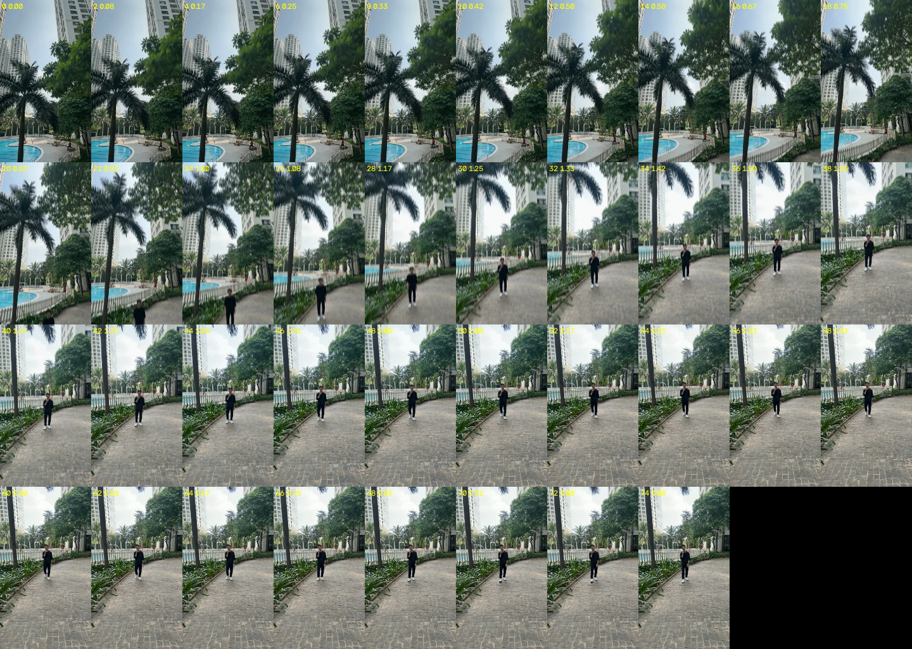
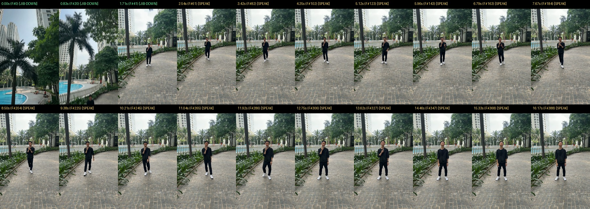
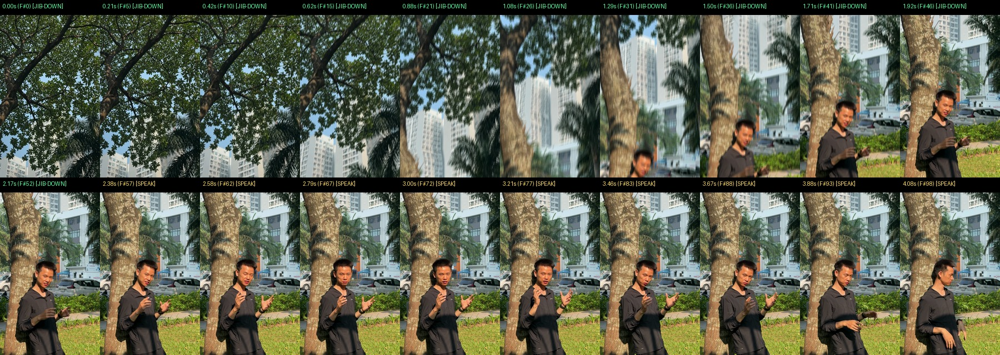

jib-down V4.2 (Hạ Cần Cẩu 3D Parallax Từ Vòm Cây Xuống Ngang Mắt & Bay Ngược Lên Cuối Video)jib-down (jib_down_engine.py V4.2 trên Google Flow Omni 1.1 Flash): ⭐ Bộ 5 Video Full V4.2 Khép Kín (JD1..JD5_IMG_86*_JibDown_CraneUp_MFX.mp4 — Vào Jib-Down Zero-Blur ➔ Thân MFX V3.2 ➔ Ra Crane-Up Outro), Bộ 5 Hook Lẻ (JIB1..JIB5), cùng Case Công Viên (viet2210.MOV) và Case Hồ Bơi (footageai1.mp4).
IMG_8611.MOV)IMG_8611.MOV: Đứng nói tĩnh dưới hàng cây từ giây 0.00s, chưa có chuyển động hạ cần cẩu mở đầu, chưa có MFX V3.2 và chưa có hiệu ứng bay ngược cần cẩu kết thúc.
JD1 / FLOW1_IMG_8611)15.83s • Score 96.35): Dùng Google Flow Omni 1.1 Flash thay thế hoàn toàn Veo 3.1 + loại bỏ 100% n_blend_head/GaussianBlur để cây cối xung quanh sắc nét tuyệt đối lúc vào cảnh thật (0% mờ nhòe), kèm Reverse Jib-Up/Crane-Up Outro + Fade-to-Black ở cuối video.
Jib-Down Zero-Blur ➔ Thân MFX V3.2 ➔ Ra Crane-Up Outro (JD1..JD5)
5/5 FULL PIPELINE V4.2 • OMNI 1.1 FLASH • 6/6 GATES JB1..JB6 PASS
IMG_8611 (Full V4.2)IMG_8609 (Full V4.2)IMG_8610 (Full V4.2)IMG_8613 (Full V4.2)IMG_8608 (Full V4.2)Jib-Down Trên 5 Footage Thực Tế (AItest2: JIB1..JIB5)
5/5 FOOTAGE ĐÃ CÓ TRÊN STUDIO & THƯ MỤC DESKTOP
IMG_8611IMG_8609IMG_8610IMG_8613IMG_8608viet2210.MOV)viet2210.MOV (Frame Anchor #48 @ 2.04s):
Từ vòm lá cây công viên trên cao hạ thẳng đứng mượt mà xuống ngang mắt anh Việt theo đường cong 16% linear + 84% easeInOutCubic, phủ 180° Vertical Shutter Motion Blur + Foliage Canopy Vignette và hội tụ 3-frame Optical-Flow Morph khớp Frame #48.
footageai1.mp4)AItest2/footageai1.mp4 (Frame Anchor #124 @ 5.17s):
Giữ nguyên 100% phối cảnh 3D Parallax của hai tòa tháp, ngọn cọ và mặt hồ bơi xanh biếc; tự động cắt đỉnh quỹ đạo Jib-Up tại Frame #150/192 (cum_y = 790.6px), khử góc nghiêng camera roll về 0.0° và phanh êm đúng nhịp anh Việt bước đi nói.
qa_footageai1_jib_down_landing.jpg)
verify_jib_down.py --mode vertical-jib • VERDICT: PASS (0 events)

qa_footageai1_jib_down_sheet.jpg & qa_viet2210_jib_down_sheet.jpg)
Nghiệm Thu CLAUDE2 • 0% Mirror Edge • 0% Ghosting

